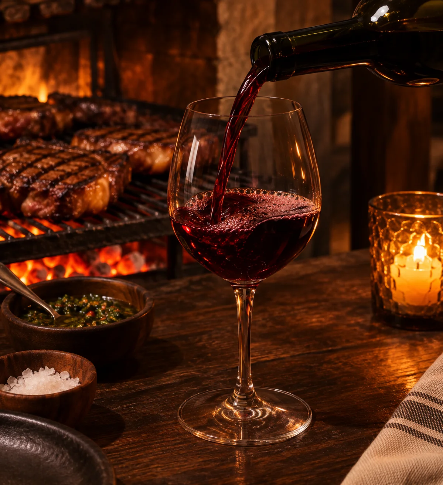

Provoleta al hierro
Orégano, tomate asado y pan de campo.
LA CARTA
Cortes con carácter, acompañamientos de verdad.
Vos elegís el punto. Nosotros ponemos el fuego.

QUE NO FALTE UNA COPA
Un tinto para la carne, una charla para el vino. Consultá las etiquetas y opciones sin alcohol de la casa.
Buscá tu mesa ↗